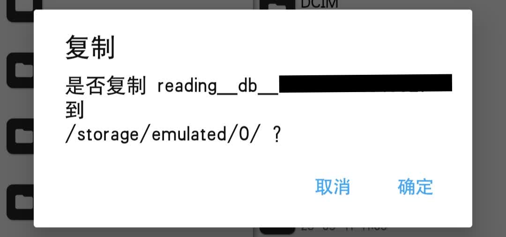
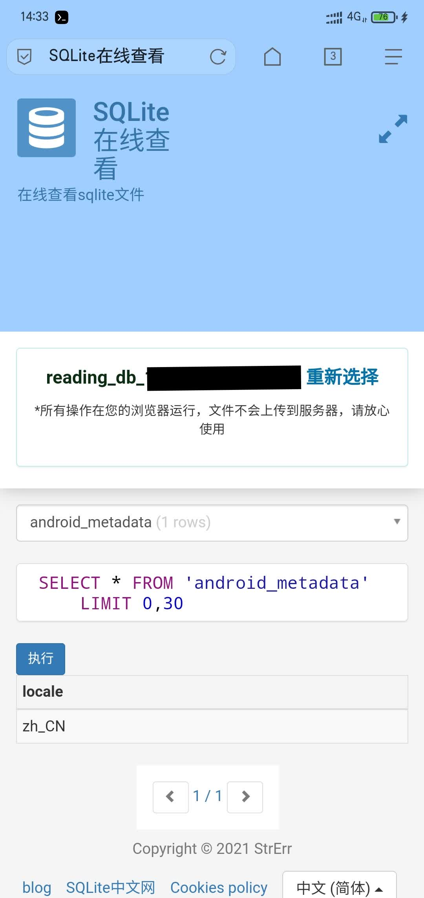
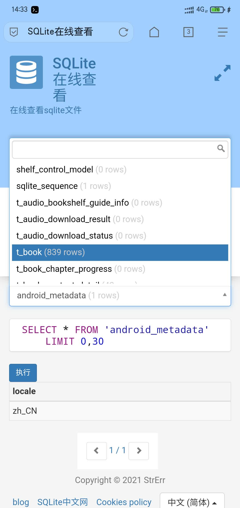
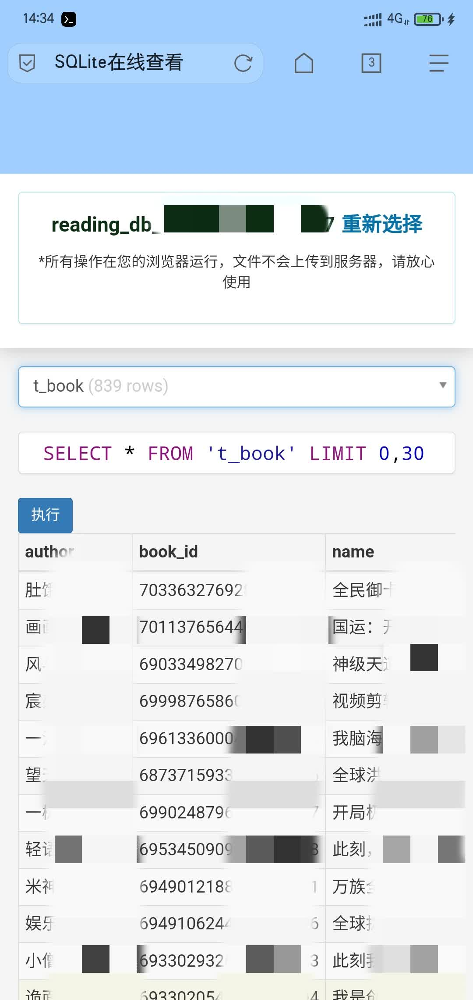
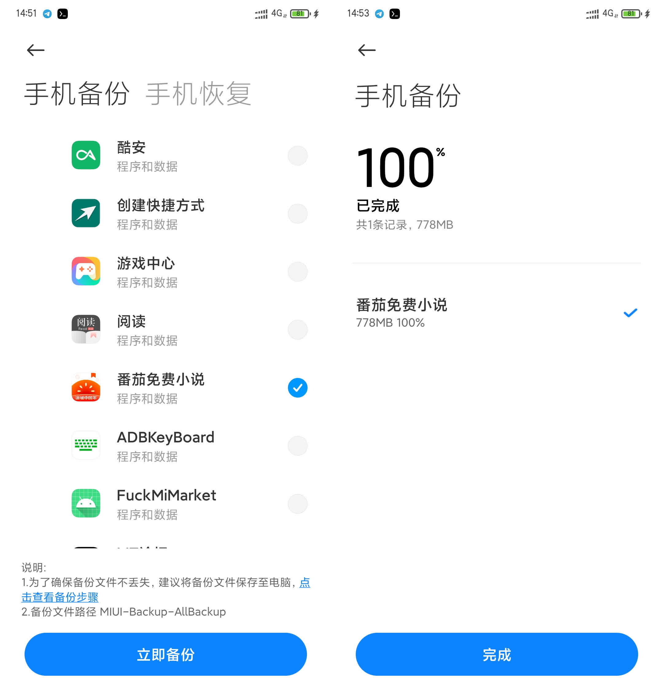
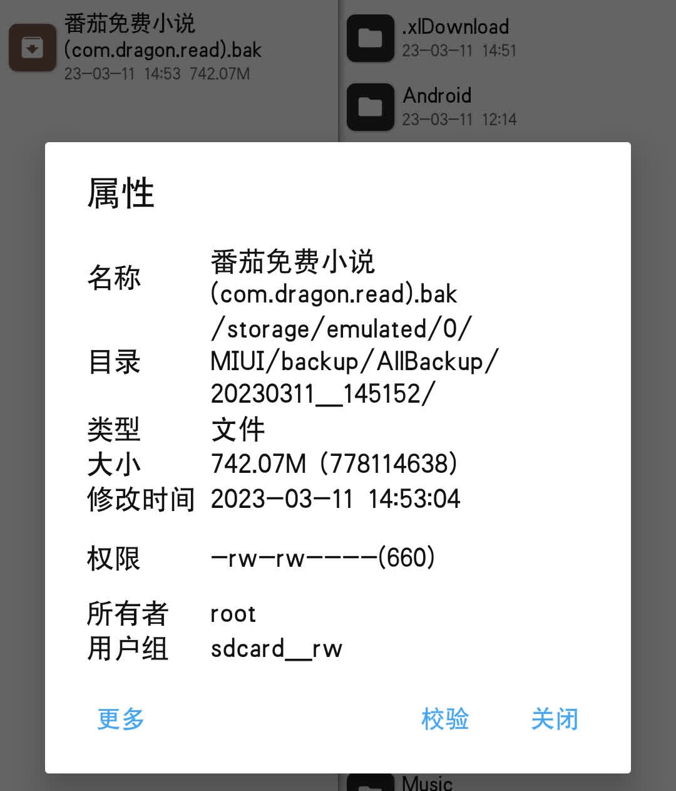
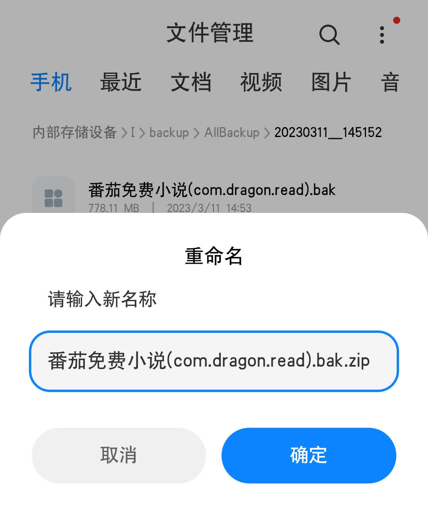
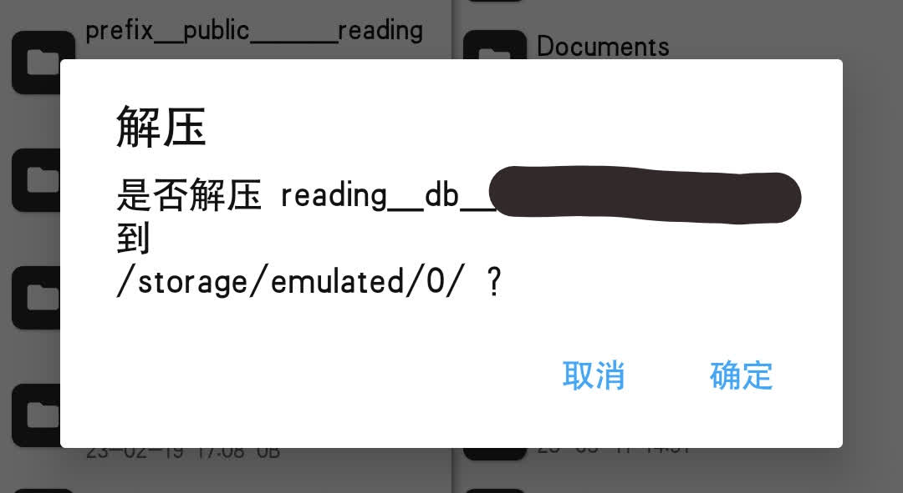

阅读添加番茄小黑屋书籍
题外话
之前在 番茄小说书源分享 + 添加小黑屋书籍 简单的提到过在阅读添加番茄小黑屋的小说，但那只是顺便的，而且也不详细、明了，而且书源也没用针对性的优化，导致导入是有很多问题。
正好最近因为番茄源失效了，需要修复，在参考大佬们的做法后修复了原来的源，顺便添加了一点功能，看到自己的博客，想着便出一个教程，放在博客上。
其实本来打算直接搞个小工具直接解析的，但是我懒，于是随便找了个网页凑活凑活~诶嘿~
导入书源
第一步当然是导入书源啦~
当然，只要导入“番茄小说”就可以了！
提取数据文件
方法一（需要root）
使用MT管理器，打开 /data/data/com.dragon.read/files/000000000000000 文件夹(0表示数字，如果你没有登录多个账号，它只有一个)，复制文件名为 reading_db_000000000000000 的文件到一个不需要 root 也可以访问的目录，比如 /storage/emulated/0/。

接着打开浏览器，访问 SQLite在线查看，选择并上传刚刚复制的文件 reading_db_000000000000000。

然后点击上方的选择框，选择 t_book:

再接着找到你想添加到阅读的小黑屋书籍，复制 book_id 列的数字。

替换链接中的 【书籍ID】: https://api5-normal-lq.fqnovel.com/reading/bookapi/detail/v/?book_id=【书籍ID】&iid=466614321180296&aid=1967&version_code=290。
最后，打开阅读，选择添加网址，填入刚刚替换后的链接。
到此，一切大功告成！！(σ≧︎▽︎≦︎)σ。
方法二（免root）
注意：本方法只适用于 MIUI 系统（小米手机）！其他手机请自行摸索！
打开备份于恢复，备份番茄免费小说：

备份完成后用 MT管理器 打开如图所示文件夹，并点击“番茄免费小说”开头的文件，此时会进入压缩包预览。

如果不想下载 MT管理器，也可以使用自带的文件管理，打开对应路径，修改文件夹，在最后添加 .zip，然后解压，我手机没空间就不解压了。

打开压缩包后点击 apps 文件夹，再点击 com.dragon.read 文件夹，此时会看到一堆文件夹，找到最大的文件夹点进去！此时再点击 files 文件夹进入，如方法一种一样找到一个全是数字的文件夹点击进入。
接着如图所示，找到类似文件名的文件，解压到一个不需要root也能访问的文件夹，比如 /storage/emulated/0/:

接着打开浏览器，访问 SQLite在线查看，选择并上传刚刚复制的文件 reading_db_000000000000000。
然后点击上方的选择框，选择 t_book:
再接着找到你想添加到阅读的小黑屋书籍，复制 book_id 列的数字。
替换链接中的 【书籍ID】: https://api5-normal-lq.fqnovel.com/reading/bookapi/detail/v/?book_id=【书籍ID】&iid=466614321180296&aid=1967&version_code=290。
最后，打开阅读，选择添加网址，填入刚刚替换后的链接。
到此，一切大功告成！！(σ≧︎▽︎≦︎)σ。